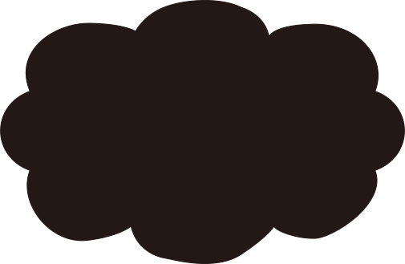

どんなときも。
どこへでも。
カナダ発
100%防水
ニットスニーカー


Vessiの特徴

100%防水

雨、雪、ぬかるみ、
もちろん日常も。
どこへでも連れていける
スニーカーです。
ニット生地なのに
100％防水？
信じられないでしょうが、
本当なんです。
私たちのDyma-tex🄬テクノロジー（特許取得済み）により、
雨も雪もぬかるみも泥も
へっちゃらです。
優れた撥水性が汚れ、砂、
水を寄せ付けません。

Vessiの特徴

雲のような
はきごこち
まるで雲の上を歩いているような心地よさ。
靴を脱ぎたくなくなるかも。
Vessiのスニーカーはニット素材。
靴ずれの心配はいりません。
100％防水で通気性のあるニットは、あなたの足を
優しくつつみこみます。
クッション性のあるクラウドサポートと抗菌インソールで
足元は一年中快適です。

Vessiの特徴

履いているのを
忘れそうな軽さ
Vessi は世界最軽量の
100% 防水シューズです。
私達のラインナップにある Cityscape スニーカーの重さは
なんとわずか 6.7 オンス（約１８９グラム）。
あなたの冒険をより軽快にしてくれます。

Vessiの特徴

地球にも優しい
Vessi では、環境への影響を最小限に抑えることに
全力で取り組んでいます。
長持ちする高品質の製品を作ることで廃棄物を減らし、
目に見えない部分に至るまで、すべての製品がビーガン素材。
また、Vessi の創業以来、当社のパッケージはプラスチックを
一切使用せず 100% リサイクル可能な素材でできたものを
使用しています。

製品ラインナップ
Vessiなら、いろんな場所へ行きたくなる。
あなたの目的にぴったりのシューズを見つけてください。
-
アスレチックスタイル
外に出ていろんな活動に参加するのが好きなあなたに。
ランニングやハイキングなど、スポーツライフスタイルを楽しむ
シューズのラインナップはこちら。 -

Cityscape Sneaker
仕事から遊びまで気楽に使えるクラシックなアスレチックシューズ。軽量（なんと189g！）でスタイリッシュなルックスの Cityscape はVessiの定番シューズです。
-

Everyday Sneakers
アーチサポートと厚いソールでどんなスポーツも快適に。
Everyday Sneakerは、スポーツを楽しむあなたの頼れる相棒です。 -

Everyday Move
毎日の動きに適したサポートと通気性をもったEveryday Moveは、VZero2 クッションミッドソールで一日中快適な履き心地です。
-
カジュアルスタイル
普段使いに適したシューズをお探しのあなたに。
カジュアルなシーンで活躍するシューズのラインナップはこちら。 -

Weekend Sneakers
オフィス〜週末のアクティビティにも最適なWeekend Sneaker。
オンとオフでどんなスタイルにも合わせられ、洗濯機で洗えます。 -

Boardwalk Slip-On
クラシックなシルエットのBoardwalk Slip-On。
足首の履き口は伸縮性があり、着脱が簡単。かかとにはスエードのアクセントがついています。 -

Sunday Slippers
Sunday Slippersは多用途型のスリッパタイプ。
ヒールはかかとが踏める構造になっていて、屋内でも屋外でも快適に過ごせます。
-
オールテレーンスタイル
より特化した機能を求めるあなたに。
寒い季節や、過酷な冒険に適したシューズのラインナップはこちら。 -

Weekend Chelsea
スニーカーのように快適で、ブーツのようなカバー力と暖かさ。
Weekend Chelseaは寒い季節の定番アイテムです。 -

Stormburst
スニーカーの快適さと、アウトドアブーツのグリップ力とカバー力のあるStormburstシューズ。
どんな冒険にもぴったりのデザインです。